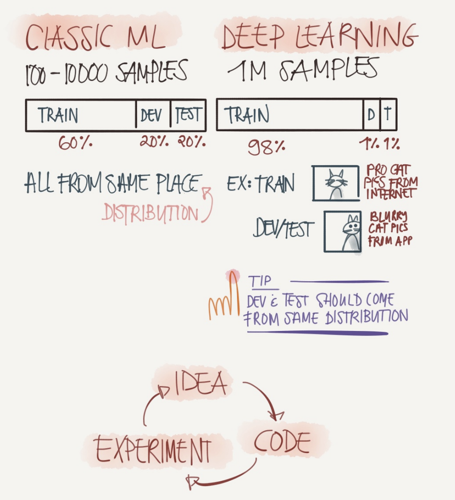

前言
参考链接 ：
第一周：Practical Aspects of Deep Learning
Train / Dev / Test sets
经典机器学习和深度学习模型所需要的样本数有非常大的差别，深度学习的样本数是经典 ML 的成千上万倍。因此训练集、开发集和测试集的分配也有很大的区别，当然我们假设这些不同的数据集都服从同分布。
一个好的 NN，需要不断的进行调参。这是个不断迭代的过程，循环进行 idea —— code —— experiment —— code。而创建高质量的训练集，验证集和测试集有助于提高循环效率，从而提高模型构建速度。

一旦数据集划分完成，便可以开始利用训练集训练模型，通过验证集选择最好的模型，经过充分验证，我们选定了最终模型，然后就可以在测试集上进行无偏估计了。
总结一下，在机器学习中，我们通常将样本分成训练集，验证集和测试集三部分，数据集规模相对较小的时候，适用传统的划分比例；数据集规模较大的时候，验证集和测试集要小于数据总量的20%或10%。
同时要尽可能确保验证集和测试集的数据来自同一分布。因为要用验证集来评估不同的模型，尽可能地优化性能。如果验证集和测试集来自同一个分布就会得到良好性能。
并不一定需要严格将数据集划分为训练集，验证集和测试集。如果你不想进行无偏估计的话，可以只划分训练集和验证集就行了。
Bias / Variance

High Bias，也就是模型不能很好地拟合数据，导致”欠拟合（under fitting）“。
High Variance，就是模型太过复杂，导致”过拟合（over fitting）“。
一个好的模型，应该是 Just right 的，如上图所示。
可以透过一些指标，从侧面研究 Bias / Variance：训练集误差和验证集误差。
对于判断一张图片是否为猫，假设所有图片来自同一分布，人眼的错误识别率为 0 %【最优误差】，则如果模型的
- 训练集误差为 1%，验证集误差为 11%，训练集误差和测试集误差相差很大，这种情况可能就是发生了”过拟合“，出现了 High Variance。
- 训练集误差为 15%，验证集误差为 16%，相比于人眼识别，训练集误差太高，但是验证集误差和训练集误差只相差 1%，可以接受。该情况可能就是发生了”欠拟合“，出现了 High Bias。
- 训练集误差为 15%，验证集误差为 30%，训练集误差很高，同时两个误差之间也相差很大。该情况就是同时出现了 High Variance 和 High Bias。
- 训练集误差是0.5%，验证集误差是1%，该情况下的 Variance 和 Bias 都很低。
总结下：Bias 高不高，取决于训练集误差相比最优误差的差值大不大；Variance 高不高，取决于训练集误差和验证集误差之间的差值大不大。
Basic Recipe for Machine Learning

初始模型训练完成，首先查看下模型的 Bias 是否很高，导致无法拟合数据，那么可以尝试以下几种方式：
- 训练一个更大规模的网络【一般会起作用】
- 尝试新的网络架构
- 将训练的时间延长【不一定起作用】
当 Bias 降低到可以接受的范围后，要检查 Variance 是否过高，如果是的话，可以尝试以下几种方式：
- 增加训练数据的规模
- 正则化
- 尝试新的网络结构
所以，要弄清楚是 Bias 过高，还是 Variance 过高，然后选择合适的解决方法。尝试新的网络结构，可能会同时降低 Bias 和 Variance，那么该网络结构就是好的。
深度学习没有 Bias 和 Variance 之间的平衡问题，它可以做到降低一方的同时，不影响另一方。
Regularization

以逻辑回归为例，则 w∈R1×nx
上图所示的 L2 正则化，其中 ∥w∥22=∑j=1nxwj2=wTw。而为什么只针对 w 进行正则化，不对 b 进行，是因为 w 是一个高维参数矢量，包含了很多的参数，我们不能拟合所有参数，如果再对参数 b 进行限制，意义不大。
上图所示的 L1 正则化，其中 ∥w∥1=∑j=1nx∣w∣。采用 L1 正则化会使 w 变得稀疏，即 w 中将包含很多0。
λ 是正则化系数，一个超参数。通常使用验证集来配置这个参数，将它设为较小值，这样可以避免过拟合。
如果是 NN，则它正则化后的成本函数为：
J(W[1],b[1],…,W[l],b[l])=m1i=1∑mL(y^(i),y(i))+2mλl=1∑L∥W[l]∥F2
其中 ∥W[l]∥F2= ∑i=1n[l−1]∑j=1n[l](wij[l])2，即矩阵中各个元素的平方求和， W[l]∈Rn[l]×n[l−1]
Why Regularization Reduces Overfitting?
L1 正则化更适用于特征选择，L2 正则化更适用于防止模型过拟合。
假设数据有两个特征 w1,w2。
-
L1 正则化为 J+2mλ(∣w1∣+∣w2∣)。每次更新 w1 时：
w1:=w1−αdw1=w1−α(∂w1∂J+2mλsign(w1))=w1−α∂w1∂J−2mαλsign(w1)
若 w1 为正数，则每次更新会减去一个常数；若 w1 为负数，则每次更新会加上一个常数，所以很容易产生特征的系数为 0的情况。特征系数为0表示该特征不会对结果有任何影响，因此 L1 正则化会让特征变得稀疏，起到特征选择的作用。
-
L2 正则化为 J+2mλ(w12+w22)。每次更新 w1 时：
w1:=w1−αdw1=w1−α(∂w1∂J+mλw1)=(1−mαλ)w1−α∂w1∂J
其中，设定合适的超参数，让 $ 0<\left(1-\frac{\alpha \lambda}{m}\right)<1 $。从上式可以看出每次更新时，会对 w1 进行特定比例的缩小，防止系数过大从而让模型变得复杂，避免过拟合。因此L2正则化也称为权重衰减(weight decay)。

于是 NN 的成本函数采用正则化后，那么当 λ 增大的时候，则权重矩阵 W 会逐渐减小。于是许多神经元的的权重会减小，因此该神经元的影响变小，使模型变得简单，不容易发生过拟合。
L2 正则化更加常用。
Dropout Regularization

Dropout 技术，即暂时丢弃一部分神经元及其连接的方法。随机丢弃神经元可以防止过拟合，同时指数级、高效地连接不同网络架构。一般使用了 Dropout 技术的神经网络会设定一个保留率 p，然后每一个神经元在一个批量的训练中以概率 1-p 随机选择是否去掉。以在第3层进行 Dropout 为例，代码如下
1
2
3
4
5
6
7
| a3 = np.array([[1, 2, 3], [1, 2, 3]])
d3 = np.random.rand(a3.shape[0], a3.shape[1])
d3 = d3 < keep_prob
a3 = np.multiply(a3, d3)
a3 /= keep_prob
|
在最后一步为什么要将 a3 / keep_prob 是为了不影响 z[4] 的期望值。【inverted dropout】
在最后进行推断时所有神经元都需要保留，因而有更高的准确度。
Understanding Dropout
Dropout 的有效的原因是因为每个单元都有可能被移除。所以不能让某些单元的权重过大，而应该将权重均衡分配给其他单元。产生了降低 L2 范数的作用，所以 Dropout 的功能类似于 L2 正则化。
实施 Dropout 的时候，需要确定一个参数 keep-prob，代表每一层上保留单元的概率。在不同层上，keep-prob 的设置可以不一样。【对于权重矩阵 w[l] 比较大的层，keep-prob 可以设置的小点；防止可以设置的大点。】这么做引发的缺点是你不得不确定更多的超参数【keep-prob】。
Dropout 的缺点是：因为每次迭代都要随机移除一部分结点，导致代价函数 J 不断变化。导致每次迭代过程中进行梯度下降的时候不稳定。
解决方法是先不使用 Dropout，运行模型，保证模型的代价函数是递减的。然后再使用 Dropout，训练模型。
Other Regularization Methods

有其他的方法防止过拟合
-
数据增强
数据增强技术如水平或垂直翻转图像、裁剪、色彩变换、扩展和旋转通常应用在视觉表象和图像分类中。
-
early stopping
通过绘制验证集误差和训练集误差，如上图所示。可以看到，在达到某一个迭代次数以后，验证集误差会升高，而训练集误差会继续下降，出现了过拟合。early stopping 就是在出现过拟合前，及时停止训练。
它的本质是：在训练开始前，W 的初始化一般较小，而随着训练的不断进行， W 逐渐增大。early stopping 就是保证取到一个适当大小的 W。与 L2 正则化类似。
机器学习的本质是降低 Bias【优化代价函数】和降低 Variance【减少过拟合】。这应该是分步进行的。而 early stopping 同时影响了 Bias 和 Variance，导致问题变得复杂。

归一化输入需要两步。假设一个训练集的输入特征为2维
-
零均值
μ=m1i=1∑mx(i)x:=x−μ
-
归一化方差
σ2=m1i=1∑m(x(i))2x/=σ2+ϵ
参数 ϵ 可以防止除0。通过上述两个步骤将每个特征都转换成了均值为0，方差为1的标准正态分布。
注意：对训练集进行归一化后，对验证集/测试集也要利用采用相同的 μ 和 σ2 进行归一化。 而不是在验证集/测试集上再求得新的 μ 和 σ2 。
归一化的原因，因为如果特征之间的量级相差太大，那么损失函数的表面就是一张狭长的椭圆形，而梯度下降或最速下降法会因为「锯齿」现象而很难收敛，因此归一化为圆形有助于减少下降方向的震荡，通常可以帮助学习算法运行得更快。
Vanishing / Exploding Gradients

“梯度消失”指的是随着网络深度增加，参数的梯度范数指数式减小的现象。梯度很小，意味着参数的变化很缓慢，从而使得学习过程停滞。梯度爆炸指神经网络训练过程中大的误差梯度不断累积，导致模型权重出现很大的更新，在极端情况下，权重的值变得非常大以至于出现 NaN 值。
假设有一个 l 层的 NN。则会有权重矩阵 W[1]，W[2]，…，W[l] 等。假设每一层的激活函数都为线性激活函数，忽略 b，则预测值为：
y^=W[l]W[l−1]W[l−2]…W[3]W[2]W[1]x
此时，若 W 的取值如上图所示，由于权重矩阵不断相乘，则最后的激活值将可能会非常小或非常大。
由于梯度函数也与层数 l 息息相关，所以梯度也会出现爆炸增长或突然减小的现象。导致训练时间非常久。
Weight Initialization for Deep Networks

如何解决梯度爆炸/梯度消失问题？一个不完美的 solution，就是谨慎地选择随机初始化参数。
如果采用的是 tanh 激活函数，则该层的权重矩阵初始化方式如下：
1
| w_l = np.random.randn(a_f.shape) * np.sqrt(1 / n_f)
|
如果采用的是 ReLu 激活函数，则该层的权重矩阵初始化方式如下：
1
| w_l = np.random.randn(a_f.shape) * np.sqrt(2 / n_f)
|
Numerical Approximation of Gradients
假设有一个函数 f(θ)=θ3，则查表可知 f(θ) 的导数为 g(θ)=3θ2。
可以用如下方式数值上逼近 g(θ)
g(θ)=ϵ→0lim2ϵf(θ+ϵ)−f(θ−ϵ)
如下图所示

Gradient Checking

如果代价函数没有随着迭代次数的增加不断递减，可能反向回归是有 bug 的。就可以使用梯度校验进行验证。
首先将所有的参数整合成一个矩阵 θ，于是得到如下的代价函数
J(W[1],b[1],W[2],b[2],…,W[l],b[l])=J(θ1,θ2,…)=J(θ)
同样将反向传播过程中得到的梯度也整合成一个矩阵 dθ
dθ=[dW[1],db[1],dW[2],db[2],…,dW[l],db[l]]
对 θ 做展开，运用数值逼近的方法
dθapprox [i]=ϵ→0lim2εJ(θ1,θ2,…θi+ε,…)−J(θ1,θ2,…θi−ε,…)
对每个 θi 都进行上述的数值逼近，得到一个逼近向量 dθapprox。然后将其和 dθ 进行验证，判断它们是否比较接近。
dis=∥dθapprox ∥2+∥dθ∥2∥dθapprox −dθ∥2
如果 dis 的值在一定的合理范围内，说明神经网络的反向传播是正确的，否则就有可能存在bug。
Gradient Checking Implementation Notes

在 NN 中进行梯度检验的一些注意事项：
- 不要在训练中使用梯度检验，它只用于调试。因为计算每一个 dθapprox[i] 会耗费很多的时间。
- 如果梯度检验失败，要检查每一项，并试着找出 bug，也就是说，如果 dθapprox[i] 与 dθ[i] 相差很大，那么就要对每个 θ[i] 进行验证，发现是哪个 θ[i] 导致 bug。
- 在实施梯度检验时，如果使用正则化，请注意计算时带上正则项。
- 梯度检验不能与dropout同时使用。
第二周：Optimization Algorithm
Mini-batch Gradient Descent
假设数据集含有5000000个样本，即 X∈Rnx×5000000，Y∈R1×5000000。

之前的训练方法是针对整个训练集执行梯度下降，要将所有的样本用于前向传播，然后进行反向传播，再更新参数，即完成了一次梯度下降。这样训练算法叫做，Batch Gradient Descent。它的缺点是，如果样本数量太多，那么完成一次梯度下降的时间会特别久。
建议做法是将数据集划分成许多的小数据集【Mini-Batch】。假设每个假设每个 Mini-Batch 中样本的数量，即 Batch Size 为1000个，那么数据集将被划分为5000个 Mini-Batch。用 X{t}∈Rnx×100,Y{t}∈R1×1000 表示第 t 个 Mini-Batch 中的数据。此时，利用一个 Mini-Batch 中的样本进行前向传播，然后进行反向传播，再更新参数，即完成一次梯度下降。这样的训练算法叫做，Mini-Batch Gradient Descent。由于每个 Mini-Batch 中的样本数量较少，所以完成一个梯度下降的时间不会太久。
对比 Batch Gradient Descent 处理整个训练集后完成一次更新，Mini-Batch Gradient Descent 是每处理完一个 Mini-Batch 就可以完成一次更新，虽然它梯度下降过程会有较多的噪声【噪声出现的原因是每次迭代的 Mini-Batch 是不一样的。可能 X{1}，Y{1} 内的样本比较易于计算，于是梯度下降的幅度更大；而 X{2}，Y{2} 内的样本不易计算，于是梯度下降的幅度比较小】，但是它的收敛速度更快。
同时Mini-Batch Gradient Descent 与 Batch Gradient Descent 在1次训练过程中的不同之处在于样本数量发生了变化，由此导致输入数据和代价函数发生了变化。
使用训练集中的所有数据对模型进行一次完整的训练，叫做1个 epoch。比如这里处理完500个 Mini-Batch 就叫做1个 epoch。
Understanding Mini-batch Gradient Descent
Mini-Batch Size 是一个超参数，一般取值为2的 n 次方，比如64，128，256，512等。

如果 Mini-Batch Size 等于所有的样本数量 m 的话，此时只有一个 Mini-Batch，Mini-Batch Gradient Descent 退化为 Batch Gradient Descent。Batch Gradient Descent 的缺点是每次迭代都需要特别久的运算时长，但是它的每次梯度更新，代价函数都是稳定下降的。
如果 Mini-Batch Size 等于1的话，此时每个样本都是独立的 Mini-Batch，Mini-Batch Gradient Descent 退化为 Stochastic Gradient Descent。虽然 Stochastic Gradient Descent 可以每针对一个样本完成运算后就可以进行一次梯度更新，但是它会带来很多的噪声，而且最终也不会收敛到一个点，一般会在最优点附近摆动。并且不能使用向量化【因为一次只针对一个样本】来加快运算速度。
而 Mini-Batch Gradient Descent，既可以使用向量化加快运算速度，每次迭代所花费的时间也是可以接受的。
如果训练集较小，一般为少于2000个的训练样本的话，建议直接使用 Batch Gradient Descent。
Exponentially Weighted Averages
指数加权平均本质上是一种近似求平均的方法，假设要求某一天的平均温度值
则公式如下：
Vt=β∗Vt−1+(1−β)θt
其中 Vt 表示到第 t 天的平均温度值，θt 表示第 t 天的温度值，β 表示可调节的超参数。Vt 约等于最近 1−β1 天的平均温度。
如果 β 越大，则绘制出的指数加权平均曲线越平滑，因为它是对更多天数据的取平均。反之，则绘制出的指数加权平均曲线越陡峭。
Understanding Exponentially Weighted Averages
假设要计算近100天的温度的指数加权平均，β=0.9
V100=0.9V99+0.1θ100V99=0.9V98+0.1θ99V98=0.9V97+0.1θ98V97=0.9V96+0.1θ97……
带入可求得
V100=0.1θ100+0.9V99=0.1θ100+0.1∗0.9θ99+0.92V98=0.1θ100+0.1∗0.9θ99+0.1∗0.92θ98+0.93V97=0.1θ100+0.1∗0.9θ99+0.1∗0.92θ98+……+0.1∗0.999θ1
我们可以看到 V100 是对过去100天温度的指数加权平均。其权值呈指数衰减。并且这些权值加起来等于1或接近于1。
但是距离越远的天数权值越小，计算时意义不大，因此通常省略权值小于 e最大权值 的项。本例中最大权值为0.1，则 0.1∗e1≈0.1∗0.910。因此可以省略 θ90 之前的温度数据，即 V100 近似于近10天的加权平均温度值。
根据极限的公式：limx→0(1−x)x1=e1，当 x=1−β 时，有 β1−β1≈e1，所以因此我们就可以总结出指数加权平均可近似为近 1−β1 天的平均温度。
相比使用算术平均计算局部平均值，指数加权平均不需要太多存储空间，只需在计算机内存中保留一行数字，并且基本一行代码即可实现，更为高效。虽然算数平均估计的均值更为准确，例如可以直接算出近十天或五十天的气温均值，但这样做的缺点是要保存所有的气温值及其气温值总和，需要更多的内存，更难实现，花费也更高。
因此，指数加权平均在机器学习中被广泛应用。
Bias Correction in Exponentially Weighted Averages
假设第一天的温度是40度，第二天的温度是55度，且 β=0.98，则有
V0=0V1=0.98V0+0.02θ1=0.02×40=0.8V2=0.98V1+0.02θ2=0.98×0.8+0.02×55=1.884……
能看出前几天的估计有很大的偏差。因此我们需要对其进行修正：1−βtVt
V1修正之后的结果为 1−0.9810.8=40；V2修正之后的结果为47.58。很明显，修正之后的结果更为准确。

并且随着 t 增加，βt 将接近于0，所以当 t 很大的时候，偏差修正几乎没有作用。这也就是当 t 很大的时候，紫线基本和绿线重合的原因。但是在初始阶段，偏差修正可以帮助我们更好的预测温度。当然也有部分人不注重初始阶段，因此也可以不使用偏差修正。
偏差修正会使得指数加权平均估计的更为准确。没有修正前的曲线为紫色，修正后的曲线为绿色，可以看出修正后的曲线拟合程度更好。
Gradient Descent with Momentum

假设代价函数的图像如上图所示，红点代表最小值的位置。
标准的梯度下降由于上下波动的原因，使我们无法使用更大的 learning rate，降低了收敛的速度。如果可以减小波动，加快前进的速度，则可以更快的收敛到最小值。
通过动量梯度下降法可以加快收敛速度，原理是计算梯度的指数加权平均数，并利用该数更新梯度。具体过程如下
- 初始化 VdW=0，Vdb=0
- 在第 t 次迭代过程中，针对当前的 Mini-Batch 计算得到 dW，db
- 计算 VdW=βVdW+(1−β)dW ，Vdb=βVdb+(1−β)db
- 更新参数 W=W−αVdW, b=b−αVdb
Momentum 梯度下降的更新过程如红线所示。

Momentum 梯度下降法涉及两个超参数：学习率 α 和参数 β。其中，β 最常用的值是0.9，即平均了前十次迭代的梯度。
在部分资料中，有把指数加权平均公式中的 1−β 省去的写法，但此时 β 通常还是取0.9。
此外，在使用Momentum梯度下降时，基本不进行偏差修正。因为通常迭代次数都大于10次，指数加权平均已经过了初始阶段，因此不再需要偏差修正。
RMSprop

假设 NN 只有两个参数：w，b。以 w 为横轴，b 为纵轴画出代价函数的等高线，如上图所示。传统的梯度下降算法如图中的曲线所示，因为在 b 轴上上下波动，导致收敛速度较慢。所以我们现在想要改善的就是：减少 b 轴上的摆动，加快 w 轴上的进程（或者至少不减缓进程）。
首先分析造成这种情况的原因，很明显是因为 db>dw，因此在相同的学习率 α下，才造成了 b 更新的步长要比 w 大很多。
那么既然这个问题是因为步长的更新差距造成的，那么我们可以赋予 b 和 w 不同的学习率来抑制这种现象。我们对参数 b 使用更小的学习率 αλ1，而对参数 w 使用更大的学习率 αλ2，其中 λ1<λ2。通过采用这种分而治之的方法来达到减少纵向摆动并且加快横向进程的目的。
RMSprop 的具体实现如下：
- 初始化 Sdw=0，Sdb=0
- 在第 t 次迭代过程中，针对当前的 Mini-Batch 计算得到 dw，db
- 计算 Sdw=βSdw+(1−β)(dw)2，Sdb=βSdb+(1−β)(db)2
- 更新参数 w:=w−αSdwdw，b:=b−αSdbdb
取平方是为了防止正负值的抵消。
式子中的 Sdb1，Sdw1 相当于 λ1，λ2。因为 db>dw，所以 Sdb>Sdw，进而有 Sdb1<Sdw1，即 λ1<λ2。符合之前的分析。

RMSprop 优化后的结果如上图绿线所示。此外，经过 RMSprop 优化后的梯度下降法可以使用更大的 learning rate，从而进一步加快学习。
为了防止 Sdb，Sdw 趋近于0，造成 Sdbdb，Sdwdw 的值趋近于无穷，所以在实际应用中，会对分母加一个很小的值 ϵ ，通常取 ϵ=10−8。修正后的公式如下：
w:=w−αSdw+ϵdwb:=b−αSdb+ϵdb
Adam Optimization Algorithm
Adam 优化算法实际上就是将 RMSprop 和 Momentum 结合在一起。Adam 优化算法的具体实现如下
- 初始化 Vdw=0，Sdw=0，Vdb=0，Sdb=0
- 在第 t 次迭代过程中，针对当前的 Batch 计算得到 dw，db
- 计算 Vdw=β1Vdw+(1−β1)dw，Vdb=β1Vdb+(1−β1)db，Sdw=β2Sdw+(1−β2)(dw)2，Sdb=β2Sdb+(1−β2)(db)2
- 使用 Adam 优化时，要进行偏差修正：Vdwcorrected =Vdw/(1−β1t)，Vdbcorrected =Vdb/(1−β1t)，Sdwcorrected =Sdw/(1−β2t)，Sdbcorrected =Sdb/(1−β2t)
- 更新参数：w:=w−αSdwcorrected +ϵVdwcorrected ，b:=b−αSdbcorrected +ϵVdbcorrected
超参数的设置：
- α：学习率，需要自行尝试得到合适的值。
- β1：常用的值是0.9。
- β2：Adam算法的发明者推荐使用0.999。
- ϵ：Adam算法的发明者建议为 10−8
上述超参数，只有学习率需要调整，其他的都采用默认即可，没有调整的必要，对结果影响不大。
Learning Rate Decay
为什么要次采用 learning rate decay？
因为如果使用固定的 learning rate，则每次梯度下降的幅度都是大致的，并且最后梯度下降算法会在最小值的附近大幅度的摆动，而不能收敛。而使用 learning rate decay，则我们可以做到梯度下降的初期，下降幅度较大，后期要收敛的时候，下降幅度较小，则最后梯度下降算法会在最小值附近的一小块区域内摆动。如下图所示

learning rate decay 有多种方法，如下图所示

其中 decayrate 为衰减率，epoch 为已经进行的 epcoh 次数，α0 为初始学习率，α 为更新后的学习率。
The Problem of Local Optima

人们通常认为cost function的图像会像上图一样，存在很多局部最优点。而优化算法会被困在其中一个局部最优点，而无法达到全局最优点。
但实际情况是，上述现象只在参数很少的时候容易出现，比如只有两个参数 w1，w2。当我们有很多参数时，在梯度为0且每个方向都是凸函数的点（即局部最优点）是很难出现的。更多的是当梯度为0时，有的方向是凸函数，有的方向是凹函数，即鞍点。
因此，当我们在训练较大的神经网络，存在大量参数，并且 cost function 被定义在较高的维度空间时，优化算法不太可能困在局部最优中。
其实我们需要关注的问题在于平稳段。平稳段指的是导数长时间接近于0的一段区域，这会减慢学习效率。如下图所示：

此时，Adam，Momentum 等各种优化算法就可以发挥作用。
第三周：Hyperparameter Tuning, Batch Normalization and Programming Frameworks
Tuning Process
深度学习过程有众多的超参数需要调试。在开始调试超参数之前，我们需要知道哪些超参数是需要优先被调整的，而哪些超参数是没有必要进行调整的。
不同超参数的调整对结果的影响程度是不同的。我们应该优先调整对模型影响较大的超参数。例如（按照超参数的重要性降序排列）：
- learning rate
- 隐藏层的神经元数，mini-batch size，momentum 梯度下降法中的 β
- layers，learning rate decay
- Adam 优化算法中的 β1，β2，ϵ 等
在早期机器学习算法中，超参数的调试常见做法是在网格中均匀的取点。

如上图所示，将分别对这16个点的超参数进行调试。但是这种方法有个弊端，举个例子说明一下。如果上图中超参数1是学习率，一个非常重要的超参数。超参数2是Adam算法中的 ϵ ，一个非常不重要的超参数。此时，只有调整学习率是有意义的，虽然我们尝试了16个点，但是实际上只测试了4个不同的学习率。这样做明显效率很低。
因此更好的做法是将在网格中均匀取值改为随机取值（假设依然取16个点）。这样我们就相当于取到了16个不同的学习率，更容易发现效果最好的那个。
假设我们随机取了16个点。结果我们发现效果最好的几个点聚集在一个区域内。此时我们可以放大这块小区域，然后在其中更密集的取值，这是一种从粗糙到精细的搜索策略。
Using an Appropriate Scale to pick Hyperparameters

随机取值需要合适的尺度下进行。
例如我们现在需要确定 layers 这个超参数，其取值范围为2～4。那么我们就可以进行线性随机取值，尝试2,3,4这几个值。又例如超参数“隐藏层的神经元数目”，假设其取值范围为50～100。那么我们就可以在50～100中进行随机取值即可。
但是并不是每个超参数都可以这样简单的直接随机取值。例如假设 learning rate 的取值范围为0.0001~1，如果我们还按上述方法进行随机取值的话，那么有90%搜索资源会落在0.1~1之间，只有10%的搜索资源在0.0001~0.1之间，这是不合理的。这是因为取值范围跨越了多个数量级。我们应该在对数尺度上进行随机搜索。10−4=0.0001，100=1，所以可以在-4~0这个范围进行随机取值，使得 learning rate 等于 10r，r∈[−4,0]。
再举一个类似的例子，在计算指数加权平均时涉及的超参数 β，假设其取值范围为0.9~0.999。根据之前讲的方法，我们可以搜索 1−β 的值（即范围为0.1～0.001），则 1−β=10r，r∈[−3,1]。
为什么不在0.9~0.999的范围内线性随机取值呢？原因在于当 β 越接近于1，对结果的影响会越大。例如
- 当 β=0.9 时，指数加权平均相当于平均了过去10（1−0.91）组数据，当 β=0.9005 时，指数加权平均依然相当于平均了过去10（1−0.90051）组数据。
- 但是当 β=0.9999 时，指数加权平均相当于平均了过去1000（1−0.9991）组数据，当 β=0.9995 时，指数加权平均相当于平均了过去2000（1−0.99951）组数据，这个差距明显要比之前大很多。
不过在实际应用时，如果对每个超参数都采用了线性随机取值的方法时也不用担心，通过由粗糙到精细的搜索策略总能让你锁定更优的超参数。
Hyperparameters Tuning in Practice: Pandas vs. Caviar
超参数并不是设置一次，以后就不会再改变了。因为数据集可能会发生变化，所以每隔几个月就应该重新评估下超参数。

关于超参数搜索，有两种策略：
- 熊猫模式：构建一个模型，然后随着训练的进行，根据 cost function 的下降趋势，不断的调整超参数的值，最终达到最优。
- 鱼子酱模式：同时构建多个模型，分别尝试不同的超参数，根据其结果选择最优的超参数设置。
关于选择何种模式，主要取决于机器的性能，如 GPU，CPU 等。
Normalizing Activations in a Network
Normalize 输入可以加速学习过程。根据这个思路，同样的我们也可以将每个隐藏层的输入 a[0],a[1],a[2],…,a[l] 进行同样的归一化处理。这样我们就可以提升每一层的训练效率。
但是在很多深度学习相关的研究中存在一个争议：是归一化激活函数的输入 z[l] 还是归一化激活函数的输出 a[l]。在实践中，归一化 z[l] 是更常见的做法。
以神经网络中第 l 层 为例，我们可以得到激活函数的输入：z(1),z(2),z(3),…,z(m) 【假设有m个神经元】，则 Normalize 的步骤如下：
- 计算平均值：μ=m1∑z(i)
- 计算方差：σ2=m1∑(z(i)−μ)2
- Normalize：znorm (i)=σ2+ϵz(i)−μ 【分母加 ϵ 是为了防止分母为0】
因此将 z[i] 转换为了标准正态分布。
但是有时候，可能不希望 z[i] 服从标准正态分布，因为不同的分布可能会更有意义。比如对于 sigmoid 函数而言，我们可能希望 z[i] 的方差更大一些，而不是全部集中在S型曲线中段近似线性的部分。

因此，引进两个新的参数 γ，β 作为调整（此处的 β 不同于momentum 中的 β）。
z~(i)=γznorm(i)+β
当 γ=σ2+ϵ,β=μ 时，有 z~(i)=znorm(i)。可以通过赋予 γ 和 β 其他的值来构造含其他均值和方差的分布。
然后我们就可以用 z~(i) 代替 z(i) 进行后续的计算，以提高训练效率。以上便是Batch Normalization（包含对输入层的归一化）。通常简称为Batch Norm或者BN。
Fitting Batch Norm into a Neural Network
将 Batch Normalization 应用深层 NN 中，无非就是在 z[l] 到 a[l] 之间添加一步 Bach Normalization 的步骤。
针对有 k 个 Mini-Batch 的数据集，将 Batch Normalization 应用到 l 层的 NN，然后进行梯度更新的具体实现如下：
针对第 m 个 Mini-Batch【循环 1~k 次】
- 前向传播
- 计算得到第 i 层的输出 z[i]∈Rn[l]×1 【涉及参数 w[1],b[1],w[2],b[2],…,w[l],b[l]】
- 对 z[i] 求得方差和均值【仅针对该 Mini-Batch】，然后实现 Normalize，得到 z~(i) 【涉及参数 γ[1],β[1],γ[2],β[2],…,γ[l],β[l]】
- 将 z~(i) 输入到激活函数中：a(i)=g[i](z~(i))
- 反向传播
- 使用 Adam，Momentum 等各种优化算法，对 w[1],b[1],w[2],b[2],…,w[l],b[l] 与 γ[1],β[1],γ[2],β[2],…,γ[l],β[l] 进行更新。
但是因为 Batch Norm 的存在，使得参数 b 失去了意义。因为 z[l]=w[l]a[l−1]+b[l]，而 Batch Norm中， z[l] 会减去其均值，此时 b[l] 的作用就被消除了。所以可以省略掉参数 b。z[l] 的计算简化为 z[l]=w[l]a[l−1]。
Why does Batch Norm work?

为什么使用 Batch Normlization 可以提升学习效率？
- 因为它将输入限制在一个类似的数量级里，这样进行 Gradient Descent 的时候，可以更快地找到最小值。
- NN 里的 Hidden Layer 的输入都是由前一层的 Hidden Layer 输出决定的。Batch Norm 可以让同一隐藏层的每次输入都服从均值为0，方差为1（或者是由 β，γ 决定的其他值）的分布，从而减少了输入的改变，使得其不会过多的受到前几层参数更新的影响。相当于每一层都可以更加独立的进行学习，尽可能的不受其他层参数的影响。这有助于加速整个网络的学习。
Batch Normlization 还有轻微的正则化效果。因为在和 mini-batch 一起使用时，计算 z[l] 的均值和方差只是基于总体数据集的一部分，因此会有噪声。因为噪声很小，所以正则化效果并不特别明显。可以和 dropout
一起使用，起到更好的正则化效果。但是千万不要将 Batch Normalization 用来做正则化，毕竟这不是它的主要功能。
Batch Norm at Test Time
在测试阶段，测试样本可能只有一个，这种情况下用一个测试样本的均值和方差进行 Batch Norm 是没有意义的。
那么在测试阶段，我们怎么获得每个隐藏层 z[l] 的均值和方差呢？
解决办法：在训练阶段计算每一个 mini-batch 时，同时缓存每一隐藏层的均值和方差，最终分别求其指数加权平均作为测试阶段的均值和方差。
如果测试数据足够多，也可以基于测试数据计算每个隐藏层的均值和方差。但是基于训练阶段得到的均值和方差的指数加权平均是更为常用的方法。
Softmax Regression

Softmax Regression 是 Logistic Regression 的一般形式。适用于多分类任务。
在多分类任务中，我们使用softmax函数使得输出限制在0～1之间，并且每个样本属于各个类别的概率相加刚好为1【sigmoid就是极端情况（类别数为2）下的softmax】。
softmax函数能将一个含任意实数的 k 维向量 z “压缩”到另一个 k 维实向量 σ(z) 中，使得每一个元素的范围都在(0,1)之间，并且所有元素的和为1。该函数的形式通常按下面的式子给出：
σ(z)j=∑k=1Kezkezj
在多分类任务中，softmax 函数的输入是从 K 个不同的线性函数得到的结果（即 xTw），而样本向量 x
属于第 j 个类别的概率为：
P(y=j∣x)=∑k=1KexTwkexTwj
Training a Softmax Classifier
我们先考虑只有一个样本的情况，输出层的 z[l]，a[l] 以及标签 y 为（假设预测类别共有 K 类）：
z[l]=⎣⎡z1z2⋮zK⎦⎤;a[l]=⎣⎡a1a2⋮aK⎦⎤;y=⎣⎡y1y2⋮yK⎦⎤
a[l] 是对 z[l] 运用 softmax 后得到的，故：
aj=∑k=1Kezkezj,j∈[1,2,…,K]
因为仅针对一个样本，所以 Loss Function 为：L(a[l],y)=−∑k=1Kyklnak。其中 yk 等于0或1；
容易得到：
∂aj∂L(a[l],y)=−ajyj(1)
接下来我们只要算出 ∂zi∂aj 即可。这里之所以是 zi 而不是 zj 是因为使用 softmax 计算得到的 aj 包含了 z[l] 中的所有元素，也就是说 aj 可对 z[l] 中的任意元素求导，而不仅仅只是 zj。因此，我们分两种情况讨论。
-
i=j
∂zi∂aj=∂zi∂ai=(∑k=1Kezk)2ezi∑k=1Kezk−e2zi=∑k=1Kezkezi−(∑k=1Kezkezi)2=ai−ai2=ai(1−ai)(2)
-
i=j
∂zi∂aj=−(∑k=1Kezk)2ezjezi=−ajai(3)
结合（1），（2），（3）可得：
∂zi∂L(a[l],y)=k=1∑K∂ak∂L(a[l],y)⋅∂zi∂ak=−aiyi⋅ai(1−ai)+k=1,k=i∑K(−akyk)⋅(−akai)=−yi+yiai+k=1,k=i∑Kykai=−yi+ai⎝⎛yi+k=1,k=i∑Kyk⎠⎞=ai−yi
式子中的 yi+∑k=1,k=iKyk=1，是因为 K 个类别中只有一个为正确类别，其标签为1，其余错误类别标签均为0
使用向量化的方法：∂z[L]∂C=a[L]−y
扩展到多个样本的情况：
∂Z[L]∂L=A[L]−Y
Deep Learning Frameworks
常见的深度学习框架有：
- Caffe/Caffe2
- Keras
- Lasagne
- mxnet
- PaddlePaddle
- Tensorflow
- Theano
- Torch
TensorFlow
未学习，建议使用 Pytorch